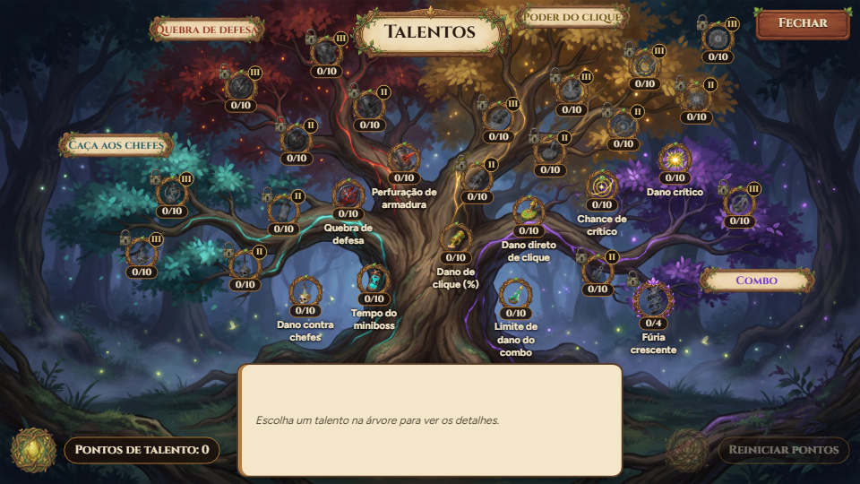
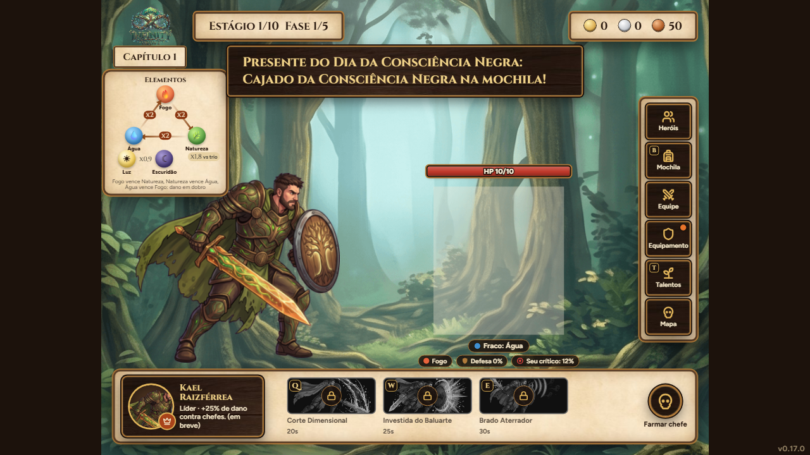
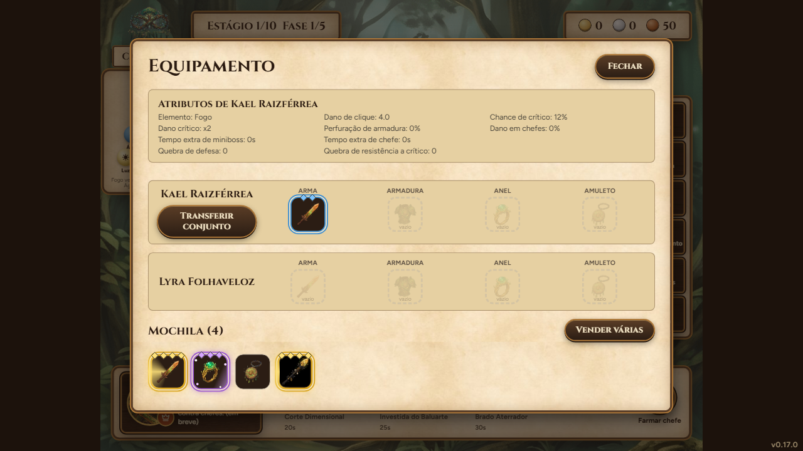

Infinity Grove · Revisão de UI
Ícone do talento dentro do anel
Os três talentos com arte alta (Fúria crescente, Tempo do miniboss e Dano contra chefe) agora ficam inteiros dentro do anel no cartão de detalhe, do mesmo tamanho dos talentos de arte quadrada. A mudança global em .icon não alterou as peças da mochila, o cajado lendário nem os ícones do HUD: todos os .icon medidos têm a imagem do mesmo tamanho da caixa.
3
telas e estados verificados
9
capturas (desktop)
0
achados de severidade alta
0
achados médios e baixos
Fidelidade à spec
- ✓Ícone dos três talentos altos contido no anel, sem esticar nem cortar
talent-detail-icon - ✓Talentos de arte quadrada (Dano de clique, Combo, Chance de crítico) continuam iguais
talent-detail-icon - ✓Peças da mochila: 40 px, imagem do tamanho da caixa; cajado lendário 52 px com
object-fit: coverpreenchendo o quadrado arredondado.piece-tile[data-special] - ✓Textos em português; nenhum texto novo
Capturas
Árvore de talentos

Cartão de detalhe: ícone no anel


Regressão: HUD e mochila (outros usuários de .icon)


Achados
Nenhum achado.
Sugestões
- ✦O teste e2e novo em
talentTreeBranchesCard.spec.jscobre o bug; vale manter a medição de caixa do ícone como guarda para outras telas com.icon.
Console e recursos
Nenhum recurso faltando visível nas capturas; o console não foi coletado nesta execução.